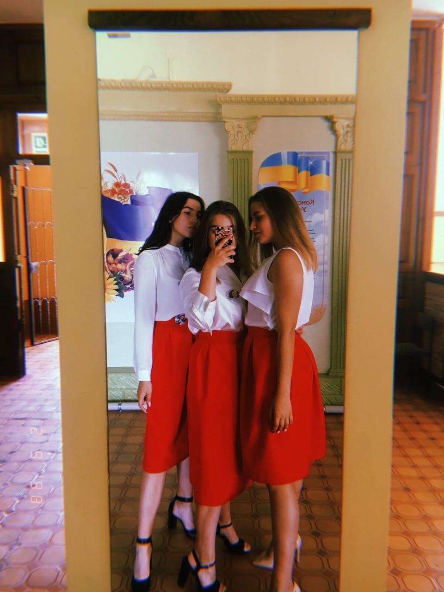

Літом 2019 року я повернулася додому.
Я не хотіла повторювати 10 клас,
тому складала всі предмети екстернатом.
Це було дуже складно. В 11 класі я обирала
2 потенційні університети для вступу:
ЛНУ та УКУ. Попри те, що я виграла грант
на безкоштовне навчання в УКУ,
я вирішила подати документи в ЛНУ тому,
що міжнародні відносини – це унікальна спеціальність,
що допомагає вийти за межі загальноприйнятого і
розвинути себе в безлічі сферах.
Також після закінчення даної спеціальності
в мене відкривається широкий спектр для пошуку роботи.